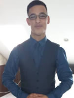
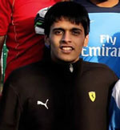

Media 03
Introduction
Individual images working on taking professional photos to express our day to day life. Also we will be doing a group project working on video production which will have a narrative.
The Team

Student One - Kamaal Khanum-Williams
Role : Team Leader
Biography:
I am Kamaal Khanum Williams currently living in Manchester, im studying Information and Communications at the metropolitan university. This degree, which I am studying, I decided to do since my background is ICT based. Since I was young, I have always involved in IT I find that out of the many subjects I have done through education ICT as a whole has been my passion, which has spurred me on into making a career out of it, which preferably will be a web developer or project manager. This is something that I am going to do as a professional career once I have graduated.
One of my career ambitions is once I complete my degree to go on an do a ICT based job i.e IT consultancy or information’s officer which I will need experience by getting involved with internships over the summers to build an e-portfolio. Hopefully with the BBC or ITV , these two companies I think would give me the best start in getting a good career an job in the IT industry getting a 2:1 in my degree will allow me to hopefully achieve this.
Images exercise - View Student One's submission.

Student Two - Umair Yaquoob
Biography:
My name is Umair Yaquoob and I was born In Birmingham. An interesting fact about me is that I am quadruple; I have one brother and two sisters the same age as me. We were the first quadruple in Birmingham. Currently for my academic studies, I have moved to Manchester and study BSc Web Development at Manchester Metropolitan University. In regards to previous education, I have completed a BTEC National Diploma in IT and achieved 360 UCAS points, which is a triple distinction. An achievement I am extremely proud of. My notable moment while studying at college was that I was nominated to be in the college prospectus to share my experience with new students.
My main interest is developing a career in Web Development working for a prestige company. However, in the end, one day I aspire to own my own firm abroad once I have the relevant experience and skills that are needed. Apart from my career aspiration, I like to spend time with my family, which I value as a key aspect of life. In addition to this, I like to socialise with my close friends, go out, and try diverse quirky food at many restaurants. In relation to TV, I am a fan of soaps mainly the mainstream ones EastEnders and Hollyoaks. In my spare time, I enhance my skills in Web Development by doing online tutorial on Treehouse by gaining knowledge about the popular web programming languages like Java, PHP, HTML and CSS.
Images exercise - View Student Two's submission.

Student Three - Ambar Sood
Biography:
Internet and the Digital world have fascinated me and has been something, which I have wanted to explore and master. Internet today dominates the world. The rage of e-commerce, technology and its applications has increased multi-fold and the trend is here to stay. I want to cement myself in the field of Marketing. Digital Marketing can be classified as a unique course, and after all the detailed research, we zeroed on MMU for some very unique reasons. Photography on the other hand has always been a passion as I try capturing as many images as I can and keep improving upon them.
I have a strong inclination towards sports and love competitive participation in Swimming, Golf and Football. With a shoe size to match Thorpe, I have excelled and won many events in swimming. I have been playing golf at club level for the past few years and have managed to achieve a handicap of 10, which could improve; however, balancing golf is more of a challenge than anything else is. I do hope to be selected for the university team with a bit of practice. I am extremely passionate about football and that will summarise all the reasons to be there in Manchester.
Images exercise - View Student Three's submission.
Student Four - Peter Siddle
Biography:
My name is Peter Siddle, I am 21 years old studying Digital Media and Communications (DMC) at Manchester Metropolitan University. My technical work experience includes an apprenticeship with RM Education. My role was as an apprentice customer support engineer providing IT systems support for secondary schools across Leeds. Following the apprenticeship, I was offered a position as an IT Officer working for an NHS Trust, Leeds Community Healthcare. In this role I was part of a small team that provided 1st and 2nd line IT support to NHS employees.
I left this role to start university. I did not pursue a career in IT Support to focus on finding a career I will enjoy. I chose the DMC degree route to learn more about producing and managing media and web development. I aspire to be successful in an industry that I revel in and find interesting while still being challenging.
Images exercise - View Student Four's submission.
Student Five - Mike Lee
Biography:
My name is Michael Lee; I am currently at Manchester Metropolitan University studying Web Development. I have recently through a structured training and work program developed my skills into the e-marketing arena which something I can use to my advantage in my career developing in the future. I have work in several SEO companies that helped me view the world of web development. My passion is web based but also love to travel this is something I want to incorporate in my future work. I love music and have been to multiple music festivals, and find I spend a considerable amount of time at the gym keeping fit.
I’m a person that has a professional attitude to the work place and studied in ICT for a number of years and have gained significant experience in the different fields of work, from experience with photography to working behind a till.
When confronted with a challenge I work to excel and overcome the challenge to the best of my abilities growing and expanding my technical skills. I have a success and grow thinking style and this enables me to prevent and expand a project or system. I hope to gain the knowledge from university to obtain a job in web development.
Images exercise - View Student Five's submission.
Return to top